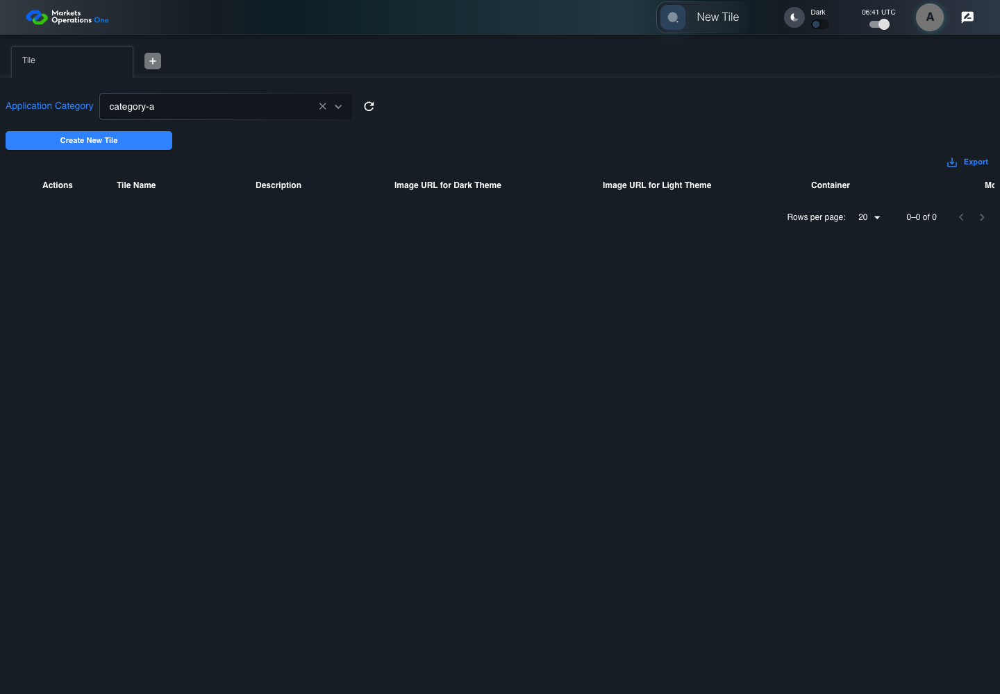
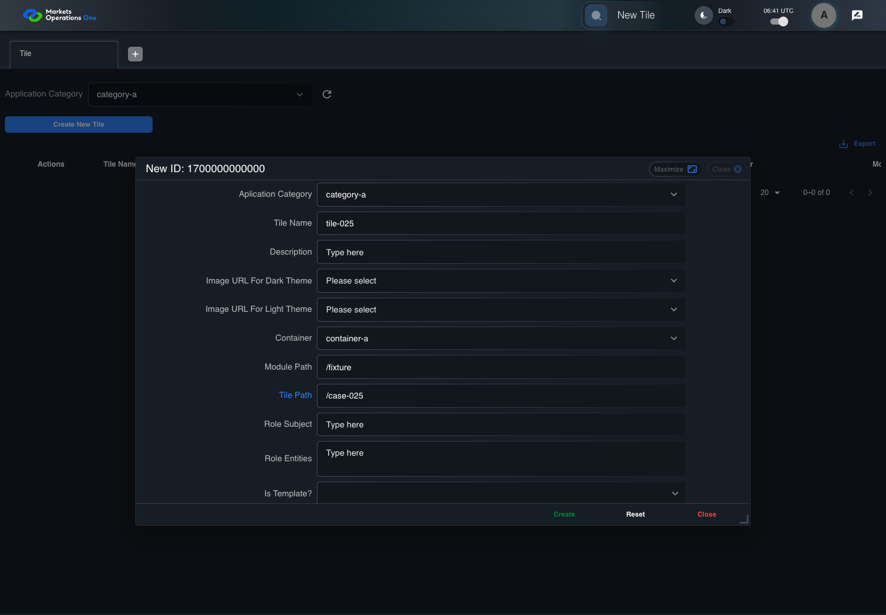
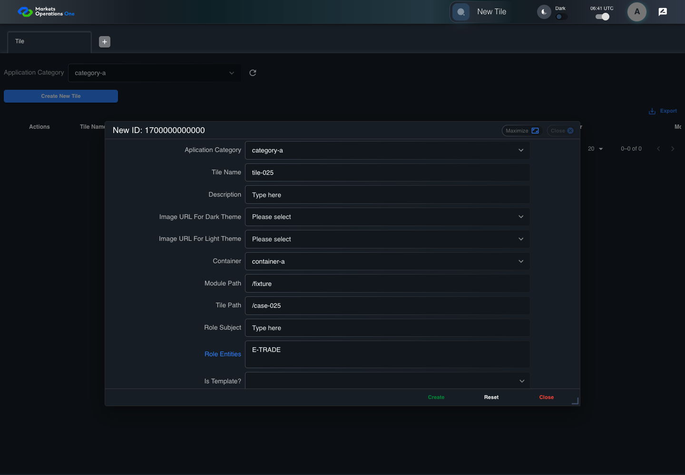
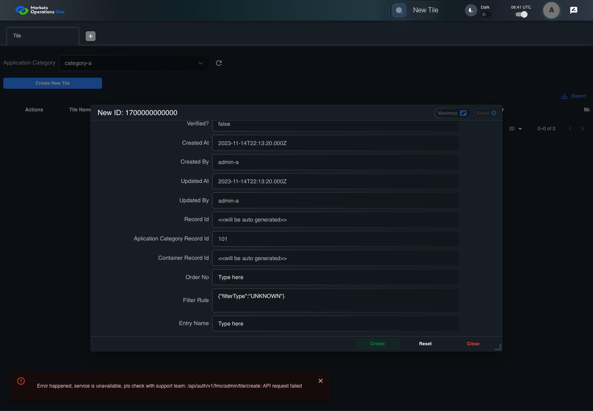

BFF-ADM-025 current BFF administration through actual UI
PASS · application/run-072/bff-adm-025-current-bff-administration-through-actual-ui-8a519b539b60-attempt-1 · ACTUAL_APPLICATION_LOCAL_SERVICES
Actual current React and exact-current BFF admin controllers/services/JPA with actual migration DDL in disposable PostgreSQL. Controlled OUD/EMS2 identities and local Spring bootstrap. Fixture SQL seeds/mutates isolated records; service errors are actual database errors. Undefined agreed messages remain unresolved acceptance.
2026-10-22T06:41:06.568Z to 2026-10-22T06:41:20.164Z
Assertions and result · Artifact manifest · Exact run inputs and source hashes
Result SHA-256:d2437a8615e88c1a7278a21c896a636f27aabd256360697e2c2c19496d5d9232Machine observations
- actual-identity-projection.json
fb984bbea74d822e7d0a0889456ad9cceba7991f8510abb1ce7ae9ddd700d1f6 - baseline-inputs.json
d45ec5244c044bf827880ef3d580387e680d6010593d6e9254e1a2ef9f38c4db - bff-boundary.json
cd4e09a8d34a995f2500ef91f045daed2f907613054652a64aab344aa2af4fa8 - committed-ui-submission-comparisons.json
25a35ac76e2ee6d278499597b8e66f0133a7ff8b74ff3e1f675bf36d0d6cfb3a - creation-clock.json
8f4d7e05e7676f3dffa213940d2d7c615793da2c370ed07fec32f8ddbb4f026c - fixture-step-10.json
674cd2ee69efa5c4c592c858f49045963a5ab88c07879a2813bf702e575d887f - fixture-step-11.json
969067c969ba8d651f70b2d0364f4cd552ebb501834c8c672092aa360cb2fe3d - fixture-step-6.json
194c3b365fadbb2689a97d40d0392b3d95ef49cc49e42f2077bb3cb27a4223b8 - fixture-step-7.json
11a1527b7670a536b0a02ee9fda53c0183caaa8a24aaa554ab7eaeb917108494 - fixture-step-8.json
43c7768d5965c3a8aa0512c2297067192684296f88462355cc5ea8324406f7ec - fixture-step-9.json
a262525fdc0182c1a809970625227dd8acb6c978b6ba2579f5925f1db093d848 - initial-persisted-records.json
c2bcd69511d133940824f243d6b3b13a9280d7422acd47cbebf5fdeb462acbcb - persisted-after-submit.json
aa20d03f530d3fd332bff3c9056e22d133180fa56e69ef3eb31e27431b66538b - reference-snapshot-3.json
1391943a58196501fd0b62a65dfc617e439684da0c6cd39756e128c64e3cdc37 - reference-snapshot-4.json
f5fef27ecd11e645aa53c5601248da0efd165de1f6faba511df55b365cef762b - rejection-or-policy-observation.json
be2b4cfbbd21f2fcea78d4d8cfb31ab91c81857560bf5125dcdbcff1893728f8 - ui-origin-bff-requests.json
256335772f52c30d361779874316a05d9e34f72c3a47e1e4fca999ab959b65e1 - undefined-message-contract.json
fda90803cd3a5cc29fe9b7354d2aae15a5e2f5095b1886beb04d8e245d4e0032
Screenshot capture: CAPTURED. Named frames: 25.
Step screenshot evidence: COMPLETE. 24/24 canonical steps have execution screenshots.
Canonical step timeline
Given Admin A uses subject "admin-a" with role "FMO_ADMIN" in an isolated authenticated browser
Execution: PASSED.
1. step-01 Visible state after step 1: Given Admin A uses subject "admin-a" with role "FMO_ADMIN" in an isolated authenticated browser
2026-10-22T06:41:09.666Z · 1440×1000
Step: /Users/lushevol/code/github/ratan-release-impact/workbench/tasks/ui-test-coverage-20261022/test-cases.md:15734
SHA-256:2fa2ea5833532b4ad24c4985f6374c7148ff82c44bbd48f1bb9c944f07fea476And the controlled Tile fixture records the initial grid rows and persisted values
Execution: PASSED.2. step-02 Visible state after step 2: And the controlled Tile fixture records the initial grid rows and persisted values
2026-10-22T06:41:09.831Z · 1440×1000
Step: /Users/lushevol/code/github/ratan-release-impact/workbench/tasks/ui-test-coverage-20261022/test-cases.md:15735
SHA-256:c7c3b72d35b6d74aa1a00a3b5f343ead9e334423d52802ab7266db7af9fb4a14And Category 101 has label "category-a" and Import Map 201 has Module Name "container-a"
Execution: PASSED.
3. step-03 Visible state after step 3: And Category 101 has label "category-a" and Import Map 201 has Module Name "container-a"
2026-10-22T06:41:09.912Z · 1440×1000
Step: /Users/lushevol/code/github/ratan-release-impact/workbench/tasks/ui-test-coverage-20261022/test-cases.md:15736
SHA-256:af2b5fca1949a831724ddd9204b2990df75ea84b223f7b16ea3c558623ed318cAnd both references belong to "FMO_ADMIN" and the Tile page category filter value is Category 101
Execution: PASSED.4. step-04 Visible state after step 4: And both references belong to "FMO_ADMIN" and the Tile page category filter value is Category 101
2026-10-22T06:41:09.979Z · 1440×1000
Step: /Users/lushevol/code/github/ratan-release-impact/workbench/tasks/ui-test-coverage-20261022/test-cases.md:15737
SHA-256:527fbafd5541000b08ab567e275850b4073a14d29ea2475a7c32b889e8b70bdaAnd the controlled creation clock returns 1700000000000 milliseconds
Execution: PASSED.5. step-05 Visible state after step 5: And the controlled creation clock returns 1700000000000 milliseconds
2026-10-22T06:41:10.047Z · 1440×1000
Step: /Users/lushevol/code/github/ratan-release-impact/workbench/tasks/ui-test-coverage-20261022/test-cases.md:15738
SHA-256:fb8a7a6c2c25cdeb43318b28fcc3220ac160dd3e51ca4560f6eafb137812639eAnd the baseline fixture data defines "Tile Name" as "tile-025"
Execution: PASSED.6. step-06 Visible state after step 6: And the baseline fixture data defines "Tile Name" as "tile-025"
2026-10-22T06:41:10.130Z · 1440×1000
Step: /Users/lushevol/code/github/ratan-release-impact/workbench/tasks/ui-test-coverage-20261022/test-cases.md:15739
SHA-256:43ead582dba303e50baa74b229c2d05e8d1feb95ec725890e679f546783ec64aAnd the baseline fixture data defines "Module Path" as "/fixture"
Execution: PASSED.
7. step-07 Visible state after step 7: And the baseline fixture data defines "Module Path" as "/fixture"
2026-10-22T06:41:10.199Z · 1440×1000
Step: /Users/lushevol/code/github/ratan-release-impact/workbench/tasks/ui-test-coverage-20261022/test-cases.md:15740
SHA-256:e30e722437937f28c8b15147a4f5c3da0028cf4a0069fd6fd0c51bfb91b29b87And the baseline fixture data defines "Tile Path" as "/case-025"
Execution: PASSED.8. step-08 Visible state after step 8: And the baseline fixture data defines "Tile Path" as "/case-025"
2026-10-22T06:41:10.279Z · 1440×1000
Step: /Users/lushevol/code/github/ratan-release-impact/workbench/tasks/ui-test-coverage-20261022/test-cases.md:15741
SHA-256:dc0078fbb308127fa1d40230ee2fa8f506f4c455669da7992d5d0a466cbca19eAnd the baseline fixture data defines "Role Entities" as "E-TRADE"
Execution: PASSED.9. step-09 Visible state after step 9: And the baseline fixture data defines "Role Entities" as "E-TRADE"
2026-10-22T06:41:10.347Z · 1440×1000
Step: /Users/lushevol/code/github/ratan-release-impact/workbench/tasks/ui-test-coverage-20261022/test-cases.md:15742
SHA-256:34a115b9f3ce9db46f90e74d7b708d70239fa9b5c313d0203079177b9d699743And the baseline fixture data defines "Filter Rule" as ""
Execution: PASSED.
10. step-10 Visible state after step 10: And the baseline fixture data defines "Filter Rule" as ""
2026-10-22T06:41:10.428Z · 1440×1000
Step: /Users/lushevol/code/github/ratan-release-impact/workbench/tasks/ui-test-coverage-20261022/test-cases.md:15743
SHA-256:c21c8e3507fb85ce391eddeba24d17d2005af64ddae90aac4d432b79e148ba11And the baseline Tile references use "Aplication Category" "category-a" and "Container" "container-a"
Execution: PASSED.11. step-11 Visible state after step 11: And the baseline Tile references use "Aplication Category" "category-a" and "Container" "container-a"
2026-10-22T06:41:10.497Z · 1440×1000
Step: /Users/lushevol/code/github/ratan-release-impact/workbench/tasks/ui-test-coverage-20261022/test-cases.md:15744
SHA-256:266e4132ea20fc8bcb480cec1aeffec560ba1162478b863863bf0414659524ceWhen Admin A clicks the button labeled "Create New Tile" on the Tile administration page
Execution: PASSED.12. step-12 Visible state after step 12: When Admin A clicks the button labeled "Create New Tile" on the Tile administration page
2026-10-22T06:41:11.719Z · 1440×1000
Step: /Users/lushevol/code/github/ratan-release-impact/workbench/tasks/ui-test-coverage-20261022/test-cases.md:15745
SHA-256:8309bd6f7a6cb5f1e4a8f1ee5c2aa5e5cf9eb8852c88987b22cbe7a15e0cae15Then the dialog titled "new ID: 1700000000000" is visible on the Tile administration page
Execution: PASSED.13. step-13 Visible state after step 13: Then the dialog titled "new ID: 1700000000000" is visible on the Tile administration page
2026-10-22T06:41:12.299Z · 1440×1000
Step: /Users/lushevol/code/github/ratan-release-impact/workbench/tasks/ui-test-coverage-20261022/test-cases.md:15746
SHA-256:31d959190a7902d1a1bad838399c455f8dadb811ad0e966bbb276c84f3eb7cbdWhen Admin A clicks the combobox labeled "Container" in dialog "new ID: 1700000000000"
Execution: PASSED.14. step-14 Visible state after step 14: When Admin A clicks the combobox labeled "Container" in dialog "new ID: 1700000000000"
2026-10-22T06:41:12.483Z · 1440×1000
Step: /Users/lushevol/code/github/ratan-release-impact/workbench/tasks/ui-test-coverage-20261022/test-cases.md:15747
SHA-256:484f440de77f5c15066997ea98485a2b234c2fc4e04809a50c3e5e590845fac4And Admin A clicks the option labeled "container-a" in the expanded "Container" listbox for dialog "new ID: 1700000000000"
Execution: PASSED.15. step-15 Visible state after step 15: And Admin A clicks the option labeled "container-a" in the expanded "Container" listbox for dialog "new ID: 1700000000000"
2026-10-22T06:41:12.986Z · 1440×1000
Step: /Users/lushevol/code/github/ratan-release-impact/workbench/tasks/ui-test-coverage-20261022/test-cases.md:15748
SHA-256:3ddb81ebcabe5d0a9bb9bace6ce538b0a1e22a9709699a6881e6f53360d3b586And Admin A fills the textbox labeled "Tile Name" with "tile-025" in dialog "new ID: 1700000000000"
Execution: PASSED.16. step-16 Visible state after step 16: And Admin A fills the textbox labeled "Tile Name" with "tile-025" in dialog "new ID: 1700000000000"
2026-10-22T06:41:13.725Z · 1440×1000
Step: /Users/lushevol/code/github/ratan-release-impact/workbench/tasks/ui-test-coverage-20261022/test-cases.md:15749
SHA-256:0b6fb93b9a5903d0b1efc67a66e5bc9cd48a73c299c7a014ff9ca26c625efbd5And Admin A fills the textbox labeled "Module Path" with "/fixture" in dialog "new ID: 1700000000000"
Execution: PASSED.17. step-17 Visible state after step 17: And Admin A fills the textbox labeled "Module Path" with "/fixture" in dialog "new ID: 1700000000000"
2026-10-22T06:41:14.247Z · 1440×1000
Step: /Users/lushevol/code/github/ratan-release-impact/workbench/tasks/ui-test-coverage-20261022/test-cases.md:15750
SHA-256:a55097b4cb0d984a5ff8309b3cc82420cc970802d1f07260fa27a01af5a476d5And Admin A fills the textbox labeled "Tile Path" with "/case-025" in dialog "new ID: 1700000000000"
Execution: PASSED.
18. step-18 Visible state after step 18: And Admin A fills the textbox labeled "Tile Path" with "/case-025" in dialog "new ID: 1700000000000"
2026-10-22T06:41:14.746Z · 1440×1000
Step: /Users/lushevol/code/github/ratan-release-impact/workbench/tasks/ui-test-coverage-20261022/test-cases.md:15751
SHA-256:1c569e773762b6ff1ae312be030fb9c850841f6d4ff3171e437198e18decbddcAnd Admin A fills the textarea labeled "Role Entities" with "E-TRADE" in dialog "new ID: 1700000000000"
Execution: PASSED.
19. step-19 Visible state after step 19: And Admin A fills the textarea labeled "Role Entities" with "E-TRADE" in dialog "new ID: 1700000000000"
2026-10-22T06:41:15.267Z · 1440×1000
Step: /Users/lushevol/code/github/ratan-release-impact/workbench/tasks/ui-test-coverage-20261022/test-cases.md:15752
SHA-256:0b6246b7f749d6e903d6a9c2daf9dc962e9f40d0525ae4bd771c312757cc28e2And Admin A fills the textarea labeled "Filter Rule" with "{\"filterType\":\"UNKNOWN\"}" in dialog "new ID: 1700000000000"
Execution: PASSED.20. step-20 Visible state after step 20: And Admin A fills the textarea labeled "Filter Rule" with "{\"filterType\":\"UNKNOWN\"}" in dialog "new ID: 1700000000000"
2026-10-22T06:41:15.773Z · 1440×1000
Step: /Users/lushevol/code/github/ratan-release-impact/workbench/tasks/ui-test-coverage-20261022/test-cases.md:15753
SHA-256:8d9edd3ca9ad646979298825910498b3276ea6c23213ac53b6a9043626984a2bAnd Admin A clicks the button labeled "Create" in dialog "new ID: 1700000000000"
Execution: PASSED.21. step-21 Visible state after step 21: And Admin A clicks the button labeled "Create" in dialog "new ID: 1700000000000"
2026-10-22T06:41:16.567Z · 1440×1000
Step: /Users/lushevol/code/github/ratan-release-impact/workbench/tasks/ui-test-coverage-20261022/test-cases.md:15754
SHA-256:ef8af9d1a99da5932c3caeb5d787ad600039b7bb3cb435cc156453188fa07d8eThen the dialog titled "new ID: 1700000000000" remains visible on the Tile administration page
Execution: PASSED.
22. step-22 Visible state after step 22: Then the dialog titled "new ID: 1700000000000" remains visible on the Tile administration page
2026-10-22T06:41:16.758Z · 1440×1000
Step: /Users/lushevol/code/github/ratan-release-impact/workbench/tasks/ui-test-coverage-20261022/test-cases.md:15755
SHA-256:3dfca2b75938fda88343524302310f38b3a429266216f4de49eb0421fd16b521And the alert with severity "error" in the portal snackbar displays the captured rejection response message
Execution: PASSED.23. step-23 Visible state after step 23: And the alert with severity "error" in the portal snackbar displays the captured rejection response message
2026-10-22T06:41:16.968Z · 1440×1000
Step: /Users/lushevol/code/github/ratan-release-impact/workbench/tasks/ui-test-coverage-20261022/test-cases.md:15756
SHA-256:7d7a886a51d1e3ad6f770f6ef5bd19724ad6d3e5826daa7ce47c1a29ebfce1dfAnd the Tile data grid with column "Record Id" row identifiers and loaded field values equal the initial grid snapshot on the Tile administration page
Execution: PASSED.24. step-24 Visible state after step 24: And the Tile data grid with column "Record Id" row identifiers and loaded field values equal the initial grid snapshot on the Tile administration page
2026-10-22T06:41:17.265Z · 1440×1000
Step: /Users/lushevol/code/github/ratan-release-impact/workbench/tasks/ui-test-coverage-20261022/test-cases.md:15757
SHA-256:93b5b6c4083fb3694ff5a1b71765901ab0852f044eaab6150de51338f0db762b
Additional named frames
Screenshots establish visible state only. Assertions and traces support functional claims.